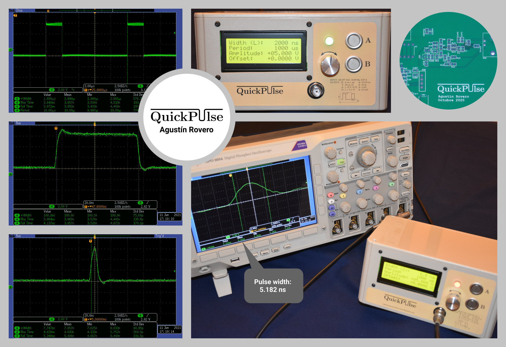

QuickPulse (SWGO)
High-Speed Pulse Generator for PMT Emulation
This project focused on the design, development, and implementation of QuickPulse, a dedicated high-speed electronic pulse generator designed to emulate Photomultiplier Tubes (PMTs). Developed within the framework of the Southern Wide-field Gamma-ray Observatory (SWGO) astrophysics research project, this device served as a crucial laboratory tool to test and calibrate data acquisition electronics without relying on unpredictable real-world particle detections.

Project Context & Rationale
- Astrophysical Framework: The system supported research on ultra-high-energy cosmic gamma rays, which provide direct tracking to extreme celestial sources because they are not deflected by cosmic magnetic fields.
- The Detection Challenge: Ground-based observatories capture these gamma rays through high-altitude Water Cherenkov Detectors (WCDs). When cosmic particles strike the water tanks, they produce brief flashes of Cherenkov light.
- The Role of PMTs: Photomultiplier Tubes sitting at the bottom of these tanks register the light and convert it into ultra-fast electrical pulses lasting only a few nanoseconds.
The Engineering Problem & Solution
- Overcoming Unpredictability: Because atmospheric cosmic ray impacts occur at random, unpredictable intervals, waiting for natural events made it extremely inefficient to test new readout electronics in the laboratory.
- The Developed Solution: QuickPulse solved this bottleneck by synthetically replicating the PMT signal profiles on demand, allowing continuous and reliable hardware debugging.
- Technical Achievements: The final system successfully generated sharp, programmable pulses down to a 5 ns duration, featuring a variable amplitude range from -5 V to +5 V to fully mimic positive and negative PMT configurations.
Technical Challenges & Lessons Learned
1. High-Speed Pulse Shaping & Time Resolution
- The Challenge: Generating clean, predictable electrical pulses down to 5 nanoseconds required an operating bandwidth far beyond conventional digital electronics.
- The Lesson: Implementing a dedicated programmable delay line (DS1023) combined with a high-speed comparator array (LT1721) proved highly effective. Relying on discrete logic gates or standard analog RC circuits was ruled out early due to poor digital control and extreme layout complexity.
2. Analog Amplitude Control & Unwanted Offsets
- The Challenge: While the temporal control of the pulse was highly accurate, managing the amplitude and offset balance presented significant signal degradation. Offsets accumulated across the analog multiplier stage (ADL5391) and the final differential-to-single-ended amplifier (THS3491) shifted the expected output levels.
- The Lesson: In high-speed paths, DC offsets cannot be treated as negligible systemic noise. Future iterations will incorporate active high-pass filtering right before the final amplification stage to maximize dynamic range, or utilize the DAC to perform software-based auto-calibration routines.
3. Electromagnetic Interference & Power Supply Coupling
- The Challenge: Initial testing revealed an unwanted 100 kHz, 100 mV AC ripple riding on top of a heavy DC component at the output when no pulses were being generated.
- The Lesson: This interference tracked back directly to the switching frequency of the \(\pm15\text{ V}\) AC-DC power supply, which ran parallel to the high-speed output traces on the 2-layer PCB (p. 22). Relocating the power stage to a physically isolated compartment and upgrading to a multi-layer board with dedicated ground planes and via stitching are critical steps for the next revision.
4. Component Sensitivity & Layout Ruggedness
- The Challenge: During the prototyping phase, the high-speed current-feedback operational amplifier (THS3491) suffered repeated catastrophic failures during power-up sequences.
- The Lesson: High-speed, high-performance ICs are exceptionally vulnerable to power supply transients and pin-specific layout constraints that may not be fully documented in standard datasheets. Troubleshooting this issue highlighted the value of technical community forums and rigorous power sequencing protection.
Conclusion & Future Outlook
- Successful Emulation: The project successfully delivered a functional laboratory instrument capable of synthesizing fast, nanosecond-scale electrical pulses, fulfilling its primary objective of emulating PMT detector signals.
- Hardware Validation: Developing this system provided a safe, repeatable, and highly controllable testing environment, drastically accelerating the debugging of data acquisition boards without needing complex, real-world astrophysical setups.
- Engineering Foundation: The technical challenges encountered—specifically regarding high-speed board layout, switching power supply noise, and analog offset management—provided invaluable insights and a solid engineering foundation for future hardware revisions.
- Scalable Architecture: The integration of programmable logic and high-speed analog stages proved that scalable, cost-effective emulation tools can effectively match the strict timing requirements of modern physics research facilities.